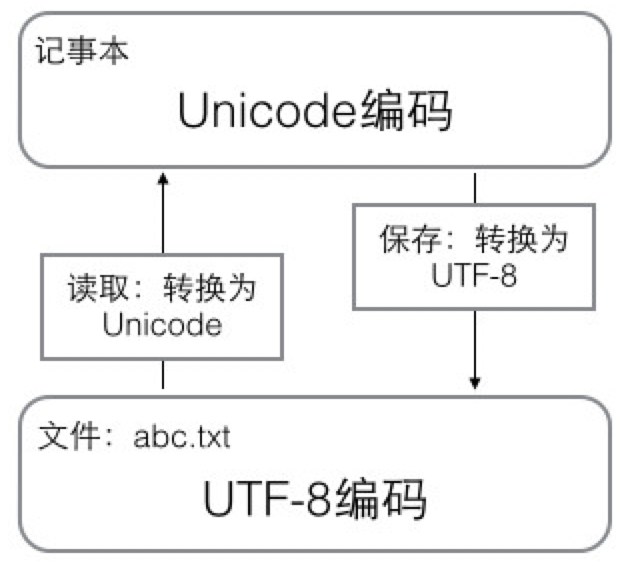
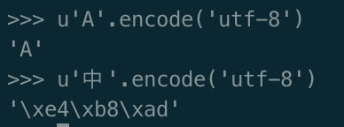
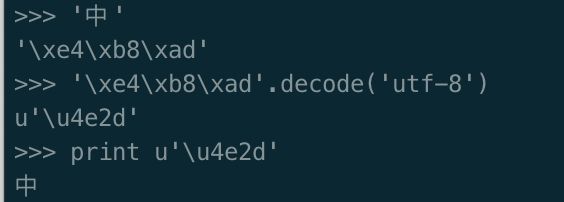

读廖雪峰python文档记录
Table of Contents
字符编码
字符 > ASCII > Unicode > UTF-8 演变历史
我们已经讲过了，字符串也是一种数据类型，但是，字符串比较特殊的是还有一个编码问题。
因为计算机只能处理数字，如果要处理文本，就必须先把文本转换为数字才能处理。最早的计算机在设计时采用8个比特（bit）作为一个字节（byte），所以，一个字节能表示的最大的整数就是255（二进制11111111=十进制255），如果要表示更大的整数，就必须用更多的字节。比如两个字节可以表示的最大整数是65535，4个字节可以表示的最大整数是4294967295。
由于计算机是美国人发明的，因此，最早只有127个字母被编码到计算机里，也就是大小写英文字母、数字和一些符号，这个编码表被称为ASCII编码，比如大写字母A的编码是65，小写字母z的编码是122。
但是要处理中文显然一个字节是不够的，至少需要两个字节，而且还不能和ASCII编码冲突，所以，中国制定了GB2312编码，用来把中文编进去。
你可以想得到的是，全世界有上百种语言，日本把日文编到Shift_JIS里，韩国把韩文编到Euc-kr里，各国有各国的标准，就会不可避免地出现冲突，结果就是，在多语言混合的文本中，显示出来会有乱码。
因此，Unicode应运而生。Unicode把所有语言都统一到一套编码里，这样就不会再有乱码问题了。
Unicode标准也在不断发展，但最常用的是用两个字节表示一个字符（如果要用到非常偏僻的字符，就需要4个字节）。现代操作系统和大多数编程语言都直接支持Unicode。
现在，捋一捋ASCII编码和Unicode编码的区别：ASCII编码是1个字节，而Unicode编码通常是2个字节。
字母A用ASCII编码是十进制的65，二进制的01000001；
字符0用ASCII编码是十进制的48，二进制的00110000，注意字符'0'和整数0是不同的；
汉字中已经超出了ASCII编码的范围，用Unicode编码是十进制的20013，二进制的01001110 00101101。
你可以猜测，如果把ASCII编码的A用Unicode编码，只需要在前面补0就可以，因此，A的Unicode编码是00000000 01000001。
新的问题又出现了：如果统一成Unicode编码，乱码问题从此消失了。但是，如果你写的文本基本上全部是英文的话，用Unicode编码比ASCII编码需要多一倍的存储空间，在存储和传输上就十分不划算。
所以，本着节约的精神，又出现了把Unicode编码转化为“可变长编码”的UTF-8编码。UTF-8编码把一个Unicode字符根据不同的数字大小编码成1-6个字节，常用的英文字母被编码成1个字节，汉字通常是3个字节，只有很生僻的字符才会被编码成4-6个字节。如果你要传输的文本包含大量英文字符，用UTF-8编码就能节省空间：
搞清楚了ASCII、Unicode和UTF-8的关系，我们就可以总结一下现在计算机系统通用的字符编码工作方式：
在计算机内存中，统一使用Unicode编码，当需要保存到硬盘或者需要传输的时候，就转换为UTF-8编码。
用记事本编辑的时候，从文件读取的UTF-8字符被转换为Unicode字符到内存里，编辑完成后，保存的时候再把Unicode转换为UTF-8保存到文件

所以你看到很多网页的源码上会有类似<meta charset="UTF-8" />的信息，表示该网页正是用的UTF-8编码
python 字符串编码转换
Python的诞生比Unicode标准发布的时间还要早，所以最早的Python只支持ASCII编码， 普通的字符串'ABC'在Python内部都是ASCII编码的。Python提供了ord()和chr()函数，可以把字母和对应的数字相互转换
Python在后来添加了对Unicode的支持，以Unicode表示的字符串用u'…'表示
把u'xxx'转换为UTF-8编码的'xxx'用encode('utf-8')方法
把UTF-8编码表示的字符串'xxx'转换为Unicode字符串u'xxx'用decode('utf-8')方法

英文字符转换后表示的UTF-8的值和Unicode值相等（但占用的存储空间不同）， 而中文字符转换后1个Unicode字符将变为3个UTF-8字符

# -*- coding: utf-8 -*-注释是为了告诉Python解释器，按照UTF-8编码读取源代码，否则，你在源代码中写的中文输出可能会有乱码Python当然也支持其他编码方式，比如把Unicode编码成GB2312：
>>> u'中文'.encode('gb2312')
'\xd6\xd0\xce\xc4'
但这种方式纯属自找麻烦，如果没有特殊业务要求，请牢记仅使用Unicode和UTF-8这两种编码方式。
在Python 3.x版本中，把'xxx'和u'xxx'统一成Unicode编码，即写不写前缀u都是一样的，而以字节形式表示的字符串则必须加上b前缀：b'xxx'。
% 格式化字符串
常见的占位符有： %d 整数
%f 浮点数
%s 字符串
%x 十六进制整数
>>> '%5d-%03d' % (3, 1) ' 3-001' >>> '%05.2f' % 3.1415926 '03.14' >>> 'growth rate: %d %%' % 7 'growth rate: 7 %'如果你不太确定应该用什么，%s永远起作用，它会把任何数据类型转换为字符串
字符串里面的%是一个普通字符怎么办？这个时候就需要转义，用%%来表示一个%：
list / tuple /dict /set
a = [0,'1',True]
t = ('a',) 定义一个元素的元组
t = ('a', 'b', ['A', 'B']) '可变的' tuple
dict:
查找和插入的速度极快，不会随着key的增加而增加；
需要占用大量的内存，内存浪费多。
list：
查找和插入的时间随着元素的增加而增加；
占用空间小，浪费内存很少。
set可以做数学意义上的交集、并集等操作,set内不能存放list和dict等对象
字符串'xxx'或Unicode字符串u'xxx'也可以看成是一种list，每个元素就是一个字符
>>> 'ABCDEFG'[::2]
'ACEG'
函数
参数
可变参数 : 仅仅在参数前面加了一个*号。在函数内部，参数numbers接收到的是一个tuple
def calc(*numbers): sum = 0 for n in numbers: sum = sum + n * n return sum calc(1, 2)
关键字参数 :在参数前面加两个*号,允许你传入0个或任意个含参数名的参数，这些关键字参数在函数内部自动组装为一个dict
函数person除了必选参数name和age外，还接受关键字参数kw。在调用该函数时，可以只传入必选参数
def person(name, age, **kw): print 'name:', name, 'age:', age, 'other:', kw
参数组合 : 参数定义的顺序必须是：必选参数、默认参数、可变参数和关键字参数
def func(a, b, c=0, *args, **kw): print 'a =', a, 'b =', b, 'c =', c, 'args =', args, 'kw =', kw
递归
递归函数:
理论上，所有的递归函数都可以写成循环的方式，但循环的逻辑不如递归清晰
def fact(n): if n==1: return 1 return n * fact(n - 1def fact(n):
尾递归 是指，在函数返回的时候，调用自身本身，并且，return语句不能包含表达式。 这样，编译器或者解释器就可以把尾递归做优化，使递归本身无论调用多少次，都只占用一个栈帧，不会出现栈溢出的情况
遗憾的是，大多数编程语言没有针对尾递归做优化，Python解释器也没有做优化
def fact(n): return fact_iter(1, 1, n) def fact_iter(product, count, max): if count > max: return product return fact_iter(product * count, count + 1, max)
列表生成式
list生成式 : [x * x for x in range(1, 11) if x % 2 = 0]=
读写文件就是请求操作系统打开一个文件对象（通常称为文件描述符），然后，通过操作系统提供的接口从这个文件对象中读取数据（读文件），或者把数据写入这个文件对象（写文件） for i, value in enumerate(['A', 'B', 'C']): enumerate 函数可以把一个list变成索引-元素对
[k + '' + v for k, v in d.iteritems()] =iteritems() 可以同时迭代dict的key和value
if not isinstance(x, (int, float)): raise TypeError('bad operand type')
生成器
通过列表生成式，我们可以直接创建一个列表。但是，受到内存限制，列表容量肯定是有限的
如果列表元素可以按照某种算法推算出来，那我们是否可以在循环的过程中不断推算出后续的元素呢？ 这样就不必创建完整的list，从而节省大量的空间。在Python中，这种一边循环一边计算的机制，称为生成器（Generator）
要创建一个generator，有很多种方法。第一种方法很简单，只要把一个列表生成式的[]改成()，就创建了一个generator
>>> g = (x * x for x in range(10))
>>> g
<generator object <genexpr> at 0x10b612320>
通过g.next打印元素
yield关键字定义斐波那契数列生成器
def fib(max): n, a, b = 0, 0, 1 while n < max: #print b yield b a, b = b, a + b n = n + 1
变成generator的函数，在每次调用next()的时候执行， 遇到yield语句返回，再次执行时从上次返回的yield语句处继续执行
函数式编程
Functional Programming，虽然也可以归结到面向过程的程序设计，但其思想更接近数学计算
函数式编程的一个特点就是，允许把函数本身作为参数传入另一个函数，还允许返回一个函数！
由于Python允许使用变量，因此，Python不是纯函数式编程语言
- 论函数做为参数
高阶函数map/reduce
map()函数接收两个参数，一个是函数，一个是序列
def f(x): return x * x map(f, [1,2,3])
reduce把一个函数作用在一个序列[x1, x2, x3…]上，这个函数必须接收两个参数，reduce把结果继续和序列的下一个元素做计算
def f(x, y): return x * 10 + y reduce(f, [1,3,5]) reduce(f, map(int, '13579')) #str 转换成 int #用lambda函数进一步简化成 reduce(lambda x,y : x*10+y,map(int,'567'))
自定义排序算法 sorted 排序的原则是对比较结果返回 -1,0,1
忽略大小写来比较两个字符串，实际上就是先把字符串都变成大写（或者都变成小写），再比较
def cmp_ignore_case(s1, s2): u1 = s1.upper() u2 = s2.upper() if u1 < u2: return -1 if u1 > u2: return 1 return 0 sorted(['Ba','ba','Cc','cC']) sorted(['Ba','ba','Cc','cC'],cmp_ignore_case)
论函数做为返回值
相关参数和变量都保存在返回的函数中，这种称为“闭包（Closure）”的程序结构拥有极大的威力。
def lazy_sum(*args): def sum(): ax = 0 for n in args: ax = ax + n return ax return sum f = lazy_sum(1,2,3) #当我们调用lazy_sum()时，返回的并不是求和结果，而是求和函数 print f #调用函数f时，才真正计算求和的结果 print f() #
匿名函数
map(lambda x: x * x, [1, 2, 3, 4, 5, 6, 7, 8, 9])
关键字lambda表示匿名函数，冒号前面的x表示函数参数
匿名函数有个限制，就是只能有一个表达式
Python对匿名函数的支持有限，只有一些简单的情况下可以使用匿名函数
装饰器
无参数装饰器
import functools def log(func): @functools.wraps(func) def wrapper(*args, **kw): print 'call %s():' % func.__name__ return func(*args, **kw) return wrapper @log def now(): print '2019-01-07' now()
log()是一个decorator，返回一个函数，于是调用now()将执行新函数，即在log()函数中返回的wrapper()函数
需要传参数装饰器
import functools def log(text): def _decorator(func): @functools.wraps(func) def wrapper(*args, **kw): print '%s %s():' % (text, func.__name__) return func(*args, **kw) return wrapper return _decorator @log('execute') def now(): print '2019-01-07' now() #now = log('execute')(now)
以上两种decorator的定义都没有问题,它们的__name__已经从原来的'now'变成了'wrapper'
Python内置的functools.wraps就是干这个事的，所以，一个完整的decorator的写法,需要添加
@functools.wraps(func)
面向对象（OOP）的设计模式中，decorator被称为装饰模式
偏函数
def int2(x, base=2): return int(x, base) int2('1000') # 8
functools.partial 就是帮助我们创建一个偏函数的
把一个函数的某些参数（不管有没有默认值）给固定住（也就是设置默认值），返回一个新的函数，调用这个新函数会更简单
当函数的参数个数太多，需要简化时,使用偏函数
int2 = functools.partial(int, base=2)
模块
作用域
xxx 这样的变量是特殊变量( author ，__name__)
_xxx和 __xxx这样的函数或变量就是非公开的（private）
模块搜索路径
Python解释器会搜索当前目录、所有已安装的内置模块和第三方模块，搜索路径存放在sys模块的path变量中
添加路径方式:
- 运行时添加
sys.path.append('/Users/michael/my_py_scripts')
2.PYTHONPATH
Python提供了__future__模块，把下一个新版本的特性导入到当前版本
如果要获得一个对象的所有属性和方法，可以使用dir()函数
为了达到限制的目的，Python允许在定义class的时候，定义一个特殊的__slots__变量，来限制该class能添加的属性
属性控制
Python内置的 @property 装饰器就是负责把一个xxx的getter方法变成属性调用,@xxx.setter
负责把一个setter方法变成属性赋值
class Student(object): @property def score(self): return self._score @score.setter def score(self, value): if not isinstance(value, int): raise ValueError('score must be an integer!') if value < 0 or value > 100: raise ValueError('score must between 0 ~ 100!') self._score = value s = Student() s.score = 60 # OK，实际转化为s.set_score(60) s.score # OK，实际转化为s.get_score()
由于Python允许使用 多重继承 ,java 是单一继承的语言
类
type 元类
type()函数既可以返回一个对象的类型，又可以创建出新的类型
def fn(self, name='world'): print "Hello %s!" % name #创建Hello类 Hello = type('Hello', (object, ), dict(hello=fn)) h = Hello() h.hello()
type(class) 结果是type ,type(实例) 结果是 <class 'main.Hello'>
type要创建一个class对象，type()函数依次传入3个参数：
- class的名称；
- 继承的父类集合，注意Python支持多重继承，如果只有一个父类，别忘了tuple的单元素写法；
- class的方法名称与函数绑定，这里我们把函数fn绑定到方法名hello上。
通过type()函数创建的类和直接写class是完全一样的，因为Python解释器遇到class定义时， 仅仅是扫描一下class定义的语法，然后调用type()函数创建出class
metaclass
除了使用type()动态创建类以外，要控制类的创建行为，还可以使用metaclass
先定义metaclass，然后创建类,最后创建实例
# metaclass是创建类，所以必须从`type`类型派生： class ListMetaclass(type): def __new__(cls, name, bases, attrs): attrs['add'] = lambda self, value: self.append(value) return type.__new__(cls, name, bases, attrs) class MyList(list): __metaclass__ = ListMetaclass # 指示使用ListMetaclass来定制类 l = MyList() l.add(2) l
ORM全称“Object Relational Mapping”，即对象-关系映射
BaseException
因为错误是class，捕获一个错误就是捕获到该class的一个实例 raise 抛出错误捕捉
# err.py class FooError(StandardError): pass def foo(s): n = int(s) if n == 0: raise FooError('invalid value: %s' % s) return 10 / n
#https://docs.python.org/2/library/exceptions.html#exception-hierarchy BaseException +-- SystemExit +-- KeyboardInterrupt +-- GeneratorExit +-- Exception +-- StopIteration +-- StandardError | +-- BufferError | +-- ArithmeticError | | +-- FloatingPointError | | +-- OverflowError | | +-- ZeroDivisionError | +-- AssertionError | +-- AttributeError | +-- EnvironmentError | | +-- IOError | | +-- OSError | | +-- WindowsError (Windows) | | +-- VMSError (VMS) | +-- EOFError | +-- ImportError | +-- LookupError | | +-- IndexError | | +-- KeyError | +-- MemoryError | +-- NameError | | +-- UnboundLocalError | +-- ReferenceError | +-- RuntimeError | | +-- NotImplementedError | +-- SyntaxError | | +-- IndentationError | | +-- TabError | +-- SystemError | +-- TypeError | +-- ValueError | +-- UnicodeError | +-- UnicodeDecodeError | +-- UnicodeEncodeError | +-- UnicodeTranslateError +-- Warning +-- DeprecationWarning +-- PendingDeprecationWarning +-- RuntimeWarning +-- SyntaxWarning +-- UserWarning +-- FutureWarning +-- ImportWarning +-- UnicodeWarning +-- BytesWarning
debug测试
assert 断言
-o 关闭后，你可以把所有的assert语句当成pass来看
pdb 断点
python -m pdb err.py
TDD
测试驱动开发（TDD：Test-Driven Development
单元测试
单元测试是用来对一个模块、一个函数或者一个类来进行正确性检验的测试工作
unittest模块,编写单元测试
编写一个测试类，从unittest.TestCase继承
unittest.main()
setUp与tearDown: 这两个方法会分别在每调用一个测试方法的前后分别被执行
单元测试的测试用例要覆盖常用的输入组合、边界条件和异常。
单元测试代码要非常简单，如果测试代码太复杂，那么测试代码本身就可能有bug
文档测试
内置doctest模块可以直接提取注释中的代码并执行测试
def abs(n): ''' Function to get absolute value of number. Example: >>> abs(1) 1 >>> abs(-1) 1 >>> abs(0) 0 ''' return n if n >= 0 else (-n) #使用 if __name__=='__main__': import doctest doctest.testmod()
IO编程
从磁盘读取文件到内存，就只有Input操作，反过来，把数据写到磁盘文件里，就只是一个Output操作
同步IO 异步IO
磁盘上读写文件的功能都是由操作系统提供的，现代操作系统不允许普通的程序直接操作磁盘 读写文件就是请求操作系统打开一个文件对象（通常称为文件描述符），然后，通过操作系统提供的接口从这个文件对象中读取数据或写入数据
read(size) 反复读取size字节内容
readline() 每次读取一行
读取二进制文件，比如图片、视频等等，用'rb'模式 open('x','rb')
要读取非ASCII编码的文本文件，就必须以二进制模式打开,再解码。比如GBK编码的文件：
f = open('/Users/michael/gbk.txt', 'rb') u = f.read().decode('gbk')
Python还提供了一个codecs模块帮我们在读文件时自动转换编码，直接读出unicode：
import codecs with codecs.open('/Users/michael/gbk.txt', 'r', 'gbk') as f: f.read() # '\uu6d4b\u8bd5'
务必要调用f.close()来关闭文件,忘记调用close()会导致缓存在内存内的部分数据最后无法写到磁盘
os 模块
os.name 操作系统名
os.uname 系统信息
os.environ 操作系统中定义的环境变量
os.getenv('PATH') 取某个环境变量的值
os.path.abspath('.') 查看当前目录的绝对路径:
os.mkdir() 创建 os.rmdir() 删除目录
os.path.join('','')不同操作系统之间通用 os.path.split()
os.rename('a','b')
os.remove('a')
shutil模块提供了copyfile()的函数,它们可以看做是os模块的补充
[x for x in os.listdir('.') if os.path.isdir(x)] 目录下的所有目录
序列化
我们把变量从内存中变成可存储或传输的过程称之为序列化，在Python中叫pickling， 在其他语言中也被称之为serialization，marshalling，flattening等等，都是一个意思
反过来，把变量内容从序列化的对象重新读到内存里称之为反序列化，即unpickling
Python提供两个模块来实现序列化：cPickle和pickle,就是它只能用于Python，并且可能不同版本的Python彼此都不兼容
同的编程语言之间传递对象，就必须把对象序列化为标准格式,好的方法是序列化为JSON(loads dumps)
JSON进阶:定制JSON序列化
json.dumps( obj, skipkeys=False, ensure_ascii=True, check_circular=True, allow_nan=True, cls=None, indent=None, separators=None, encoding="utf-8", default=None, sort_keys=False, **kw)
default=None,把任意一个对象变成一个可序列为JSON的对象，我们只需要为class的实例专门写一个转换函数，再把函数传进去即可
json.dumps(s, default=lambda obj: obj.__dict__)
进程和线程
fork
Unix/Linux操作系统提供了一个fork()系统调用，它非常特殊。普通的函数调用，调用一次，返回一次， 但是fork()调用一次，返回两次，因为操作系统自动把当前进程（称为父进程）复制了一份（称为子进程）， 然后，分别在父进程和子进程内返回
子进程永远返回0，而父进程返回子进程的ID,这样做的理由是，一个父进程可以fork出很多子进程， 所以，父进程要记下每个子进程的ID，而子进程只需要调用getppid()就可以拿到父进程的ID。
# multiprocessing.py import os print 'Process (%s) start...' % os.getpid() pid = os.fork() if pid == 0: print 'I am child process (%s) and my parent is %s.' % (os.getpid(), os.getppid()) else: print 'I (%s) just created a child process (%s).' % (os.getpid(), pid)
multiprocessing 模块就是跨平台版本的多进程模块
创建子进程时，只需要传入一个执行函数和函数的参数，创建一个Process实例，用start()方法启动
import os from multiprocessing import Process def run_proc(name): print('Run child process %s (%s)...' % (name, os.getpid())) print('Parent process %s.' % os.getpid()) p = Process(target=run_proc, args=('test', )) print('Child process will start.') p.start() p.join() print('Child process end.')
启动大量的子进程，可以用进程池的方式批量创建子进程
from multiprocessing import Pool import os, time, random def long_time_task(name): print('Run task %s (%s)...' % (name, os.getpid())) start = time.time() time.sleep(random.random() * 3) end = time.time() print('Task %s runs %0.2f seconds.' % (name, (end - start))) if __name__ == '__main__': print "Parent process %s ." % os.getpid p = Pool(4) for i in range(4): p.apply_async(long_time_task, args=(i, )) print('Waiting for all subprocesses done...') p.close() p.join() print('All subprocesses done.')
对Pool对象调用join()方法会等待所有子进程执行完毕，调用join()之前必须先调用 close() ，调用close()之后就不能继续添加新的Process
Pool的默认大小是CPU的核数,这里设置最多4并发
subprocess 模块可以让我们非常方便地启动一个子进程
import subprocess print('$ nslookup www.python.org') r = subprocess.call(['nslookup', 'www.python.org']) print('Exit code:', r)
import subprocess print('$ nslookup') p = subprocess.Popen(['nslookup'], stdin=subprocess.PIPE, stdout=subprocess.PIPE, stderr=subprocess.PIPE) output, err = p.communicate(b'set q=mx\npython.org\nexit\n') print(output.decode('utf-8')) print err print('Exit code:', p.returncode) """ (emacs-python) 360code/compromise_api [master●] » nslookup > set q=mx > python.org Server: 172.24.6.11 Address: 172.24.6.11#53 Non-authoritative answer: python.org mail exchanger = 50 mail.python.org. Authoritative answers can be found from: mail.python.org internet address = 188.166.95.178 mail.python.org has AAAA address 2a03:b0c0:2:d0::71:1 > exit """
Process之间肯定是需要通信的，操作系统提供了很多机制来实现进程间的通信。
Python的multiprocessing模块包装了底层的机制，提供了Queue、Pipes等多种方式来交换数据
但是用C、C++或Java来改写相同的死循环，直接可以把全部核心跑满，4核就跑到400%，8核就跑到800%，为什么Python不行呢？
因为Python的线程虽然是真正的线程，但解释器执行代码时，有一个GIL锁：Global Interpreter Lock，任何Python线程执行前，必须先获得GIL锁，然后，每执行100条字节码，解释器就自动释放GIL锁，让别的线程有机会执行。这个GIL全局锁实际上把所有线程的执行代码都给上了锁，所以，多线程在Python中只能交替执行，即使100个线程跑在100核CPU上，也只能用到1个核
threading.local 方便线程使用自己的局部变量
import threading # 创建全局ThreadLocal对象: local_school = threading.local() def process_student(): # 获取当前线程关联的student: std = local_school.student print('Hello, %s (in %s)' % (std, threading.current_thread().name)) def process_thread(name): # 绑定ThreadLocal的student: local_school.student = name process_student() t1 = threading.Thread(target=process_thread, args=('Alice', ), name='Thread-A') t2 = threading.Thread(target=process_thread, args=('Bob', ), name='Thread-B') t1.start() t2.start() t1.join() t2.join()
ThreadLocal最常用的地方就是为每个线程绑定一个数据库连接，HTTP请求，用户身份信息等，这样一个线程的所有调用到的处理函数都可以非常方便地访问这些资源。
一个ThreadLocal变量虽然是全局变量，但每个线程都只能读写自己线程的独立副本，互不干扰。ThreadLocal解决了参数在一个线程中各个函数之间互相传递的问题
计算密集型任务同时进行的数量应当等于CPU的核心数，计算密集型任务由于主要消耗CPU资源，因此，代码运行效率至关重要（c语言）
网络、磁盘IO的任务都是IO密集型任务
异步IO
协程
协程，又称微线程，纤程。英文名Coroutine
协程看上去也是子程序，但执行过程中，在子程序内部可中断，然后转而执行别的子程序，在适当的时候再返回来接着执行
协程有何优势:
没有线程切换的开销
子程序切换不是线程切换，而是由程序自身控制,和多线程比，线程数量越多，协程的性能优势就越明显
不需要多线程的锁机制
因为只有一个线程，也不存在同时写变量冲突，在协程中控制共享资源不加锁，只需要判断状态就好了， 所以执行效率比多线程高很多
用多核CPU : 多进程+协程，既充分利用多核，又充分发挥协程的高效率，可获得极高的性能
Python对协程的支持是通过generator实现的
Python中的协程和生成器很相似但又稍有不同。主要区别在于：
生成器是数据的生产者
协程则是数据的消费者
# 生成器 def fab(): a, b = 0, 1 while True yield a a, b = b, a + b # 协程 def consumer(): r = '' while True: n = yield r if not n: return print('[CONSUMER] Consuming %s...' % n) r = '200 OK' def produce(c): c.send(None) n = 0 while n < 5: n = n + 1 print('[PRODUCER] Producing %s...' % n) r = c.send(n) print('[PRODUCER] Consumer return: %s' % r) c.close() c = consumer() produce(c)